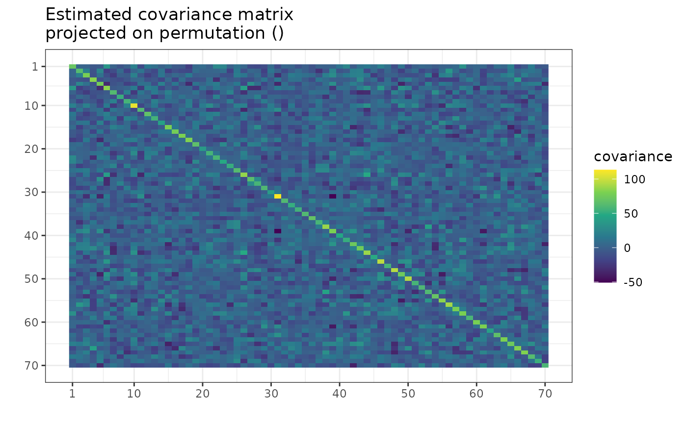
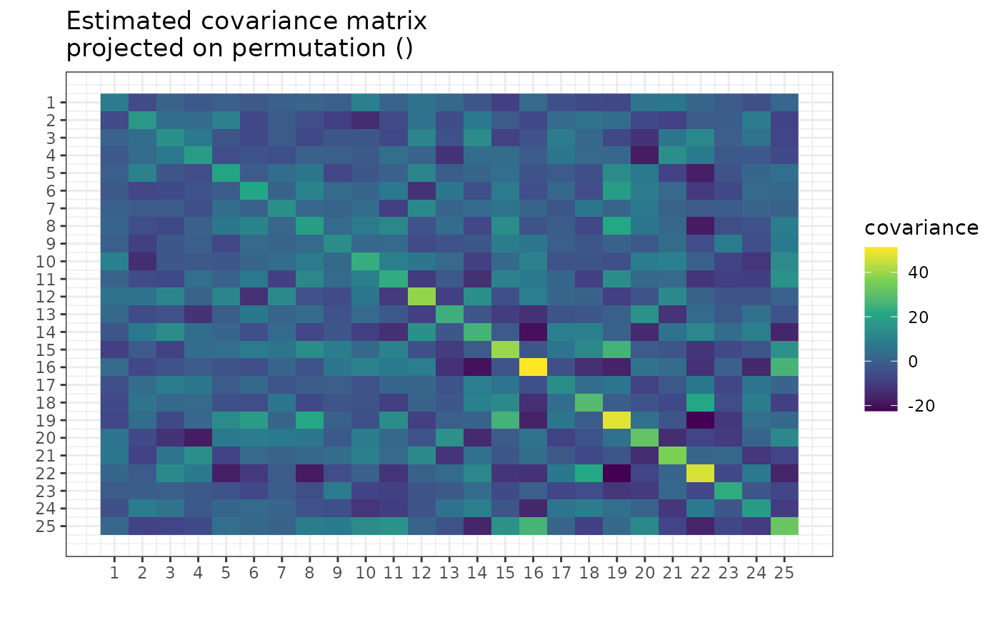
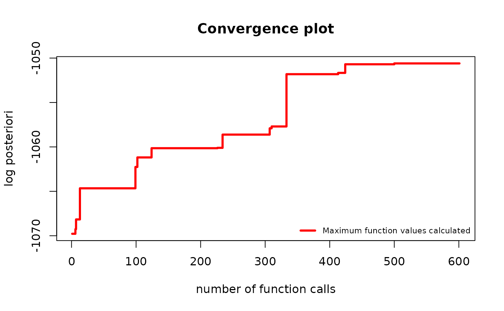
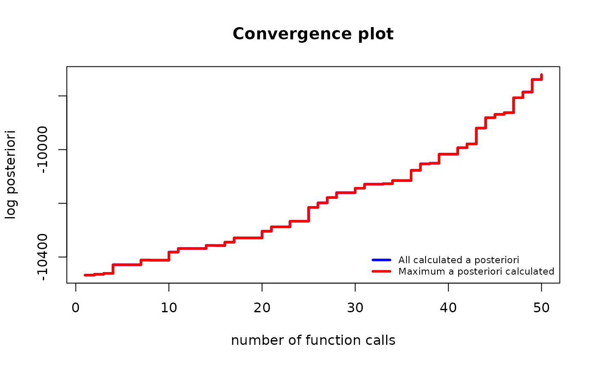

?find_MAPWhat are we optimizing?
The goal of the find_MAP() is to find the permutation
\(\sigma\) that maximizes the a
posteriori probability (MAP - Maximum A Posteriori). Such a permutation
represents the most plausible symmetry given the data.
This a posteriori probability function is described more in-depth in
the Bayesian model selection section of the
vignette("Theory", package="gips"), also available as a pkgdown
page. gips can calculate the logarithm of it by
log_posteriori_of_gips() function. In the following
paragraphs, we will refer to this a posteriori probability function as
\(f(\sigma)\).
Available optimizers
The space of permutations is enormous - for the permutation of size
\(p\), the space of all permutations is
of size \(p!\) (\(p\) factorial). Even for \(p=10\), this space is practically
impossible to browse. This is why find_MAP() implements
multiple (3) optimizers to choose from:
-
"Metropolis_Hastings","MH" -
"hill_climbing","HC" -
"brute_force","BF","full"
In general, we recommend the Brute Force for \(p\le 8\).
For bigger \(p>9\), we recommend Metropolis-Hastings.
Note on computation time
The max_iter parameter functions differently in
Metropolis-Hastings and hill climbing.
For Metropolis-Hastings, it computes a posteriori of
max_iter permutations, whereas for hill climbing, it
computes \({p\choose 2} \cdot\)
max_iter of them.
In the case of the Brute Force optimizer, it computes all \(p!\) of \(f(\sigma)\) values.
Metropolis Hastings
This optimizer is implementation of the Second approach from [1, Sec 4.1.2].
This uses the Metropolis-Hastings algorithm to optimize the space; see Wikipedia. This algorithm used in this context is a special case of the Simulated Annealing the reader may be more familiar with; see Wikipedia.
Short description
In every iteration \(i\), an algorithm is in a permutation, say, \(\sigma_i\). Then a random transposition is drawn uniformly \(t_i = (j,k)\) and the value of \(f(\sigma_i \circ t_i)\) is computed.
- If new value is bigger than the previous one, (i.e. \(f(\sigma_i \circ t_i) \ge f(\sigma_i)\)), then we set \(\sigma_{i+1} = \sigma_i \circ t_i\).
- If new value is smaller (\(f(\sigma_i \circ t_i) < f(\sigma_i)\)), then we will choose \(\sigma_{i+1} = \sigma_i \circ t_i\) with probability \(\frac{f(\sigma_i \circ t_i)}{f(\sigma_i)}\). Otherwise, we set \(\sigma_{i+1} = \sigma_i\) with complementary probability \(1 - \frac{f(\sigma_i \circ t_i)}{f(\sigma_i)}\).
The final value is the best \(\sigma\) that was ever computed.
Notes
This algorithm was tested in multiple settings and turned out to be an outstanding optimizer. Especially given it does not need any hyperparameters tuned.
The only parameter it depends on is max_iter, which
determines the number of steps described above. One should choose this
number rationally. When decided too small, there is a missed opportunity
to find potentially a much better permutation. When decided too big,
there is a lost time and computational power that does not lead to
growth. Our recommendation is to plot the convergence plot with a
logarithmic OX scale:
plot(g_map, type = "both", logarithmic_x = TRUE). Then
decide if the line has flattened already. Keep in mind that the OY scale
is also logarithmic. For example, a small change on the OY scale could
mean \(10000\) times
the change in A Posteriori.
If one decides to continue the optimization, see the Continuation of the optimization section below.
This algorithm has been analyzed extensively by statisticians. Thanks
to the ergodic theorem, the frequency of visits of a given state
converges almost surely to the probability of that state. This is the
approach explained in the [1,
Sec.4.1.2] and shown in [1, Sec. 5.2]. One can
obtain estimates of posterior probabilities by setting
return_probabilities = TRUE.
Example
Let’s say we have the data Z from the unknown
process:
dim(Z)
#> [1] 50 70
number_of_observations <- nrow(Z) # 50
perm_size <- ncol(Z) # 70
S <- cov(Z) # Assume we have to estimate the mean
g <- gips(S, number_of_observations)
suppressMessages( # message from ggplot2
plot(g, type = "heatmap") +
ggplot2::scale_x_continuous(breaks = c(1,10,20,30,40,50,60,70)) +
ggplot2::scale_y_reverse(breaks = c(1,10,20,30,40,50,60,70))
)
g_map <- find_MAP(g, max_iter = 150, optimizer = "Metropolis_Hastings")
#> ===============================================================================
g_map
#> The permutation (1,6,30,21,41,70,62,69,17,38,55,20,50,37,65,35,49,66,61,2,39,7,10,56,16,51,47,24,42,33,23,57,8,29,3,46,28,64,58,68,13,48,63,45,26,11,19,12,4,22,9,54,25,59,52,67,15,18,36,31,34,43,44,27,60,53,14,40,32):
#> - was found after 150 posteriori calculations;
#> - is 1.072e+2697 times more likely than the () permutation.After just hundred and fifty iterations, the found permutation is
unimaginably more likely than the original, ()
permutation.
plot(g_map, type = "both", logarithmic_x = TRUE)
Hill climbing
It uses the Hill climbing algorithm to optimize the space; see Wikipedia.
It is performing the local optimization iteratively.
Short description
In every iteration \(i\), an algorithm is in a permutation; call it \(\sigma_i\). Then all the values of \(f(\sigma_i \circ t)\) are computed for every possible transposition \(t = (j,k)\). Then the next \(\sigma_{i+1}\) will be the one with the biggest value:
\[\sigma_{i+1} = argmax_{\text{perm} \in \text{neighbors}(\sigma_{i})}\{\text{posteriori}(perm)\}\]
Where: \[\text{neighbors}(\sigma) = \{\sigma \circ (j,k) : 1 \le j < k \le \text{p}\}\]
The algorithm ends when all neighbors are less likely, or the
max_iter was achieved. In the first case, the algorithm
will end in a local maximum, but there is no guarantee that this is also
the global maximum.
Example
Let’s say we have the data Z from the unknown process:
dim(Z)
#> [1] 20 25
number_of_observations <- nrow(Z) # 20
perm_size <- ncol(Z) # 25
S <- cov(Z) # Assume we have to estimate the mean
g <- gips(S, number_of_observations)
plot(g, type = "heatmap")
g_map <- find_MAP(g, max_iter = 2, optimizer = "hill_climbing")
#> ================================================================================
#> Warning: Hill Climbing algorithm did not converge in 2 iterations!
#> ℹ We recommend to run the `find_MAP(optimizer = 'continue')` on the acquired output.
#> Warning: The found permutation has n0 = 24 which is bigger than the number_of_observations = 20.
#> ℹ The covariance matrix invariant under the found permutation does not have the likelihood properly defined.
#> ℹ For more in-depth explanation, see 'Project Matrix - Equation (6)' section in `vignette('Theory', package = 'gips')` or its pkgdown page: https://przechoj.github.io/gips/articles/Theory.html.
g_map
#> The permutation (20,22,23):
#> - was found after 601 posteriori calculations;
#> - is 3.824e+30 times more likely than the () permutation.
plot(g_map, type = "both")
The above warning is expected.
Brute Force
It searches through the whole space at once.
This is the only optimizer that will certainly find the actual MAP Estimator.
This is only recommended for small spaces (\(p \le 8\)). It can also browse bigger spaces, but the required time is probably too long. On our machines, for \(p = 9\) the calculations takes around 5 hours. For \(p = 10\) we expect around 40 hours of computations.
Example
Let’s say we have the data Z from the unknown process:
dim(Z)
#> [1] 13 6
number_of_observations <- nrow(Z) # 13
perm_size <- ncol(Z) # 6
S <- cov(Z) # Assume we have to estimate the mean
g <- gips(S, number_of_observations)
g_map <- find_MAP(g, optimizer = "brute_force")
#> ================================================================================
g_map
#> The permutation (1,2,3,4,5,6):
#> - was found after 720 posteriori calculations;
#> - is 43706.314 times more likely than the () permutation.Continuation of the optimization
When max_iter is reached during Metropolis-Hastings or
hill climbing, the optimization stops and returns the result. Users are
expected to plot the result and determine if it has converged. If
necessary, users can continue the optimization, as shown below.
g <- gips(S, number_of_observations)
g_map <- find_MAP(g, max_iter = 50, optimizer = "Metropolis_Hastings")
#> ==============================================================================
plot(g_map, type = "both")
The algorithm was still significantly improving the permutation. It is reasonable to continue it:
g_map2 <- find_MAP(g_map, max_iter = 100, optimizer = "continue")
#> ===============================================================================
plot(g_map2, type = "both")
The improvement has slowed down significantly. It is fair to stop the algorithm here. Keep in mind the y scale is logarithmic. The visually “small” improvement between 100 and 150 iterations was huge, \(10^{52}\) times the posteriori.
Additional parameters
The find_MAP() function has two additional parameters:
show_progress_bar and save_all_perms, which
can be set to TRUE or FALSE.
When show_progress_bar = TRUE, gips will
print “=” characters on the console during optimization. Keep in mind
that when user sets the return_probabilities = TRUE, a
second progress bar will indicate the calculation of the probabilities
after optimization.
The save_all_perms = TRUE will save all visited
permutations in the outputted object, but this significantly increases
the required RAM. For instance, with \(p=150\) and max_perm = 150000,
we needed 400 MB to store it, whereas
save_all_perms = FALSE only required 2 MB. However,
save_all_perms = TRUE is necessary for
return_probabilities = TRUE or more complex path
analysis.
Discussion
We are considering implementing the First approach from [1] in the future as well. In this approach, the Markov chain travels along cyclic groups rather than permutations.
We encourage everyone to leave a comment on available and potential
new optimizers on the ISSUE#21. There,
one can also find the implemented optimizers but not yet added to
gips.
References
[1] Piotr Graczyk, Hideyuki Ishi, Bartosz Kołodziejek, Hélène Massam. “Model selection in the space of Gaussian models invariant by symmetry.” The Annals of Statistics, 50(3) 1747-1774 June 2022. arXiv link; DOI: 10.1214/22-AOS2174